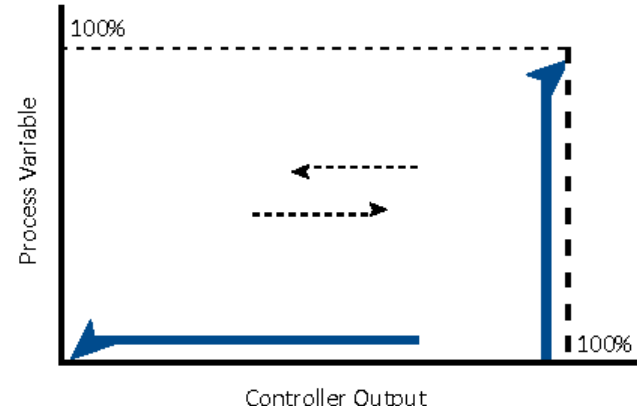

How Deadband Shows Up on the Loop

- 1The open loop is the controller output reversing direction — up one path, down another
- 2The gap between the paths at any point is deadband — output changes with no observable process response yet
- 3Friction and backlash in the valve assembly are the usual causes
After Control Valve Handbook, 6th ed., Fig. 1.18 — used directly; single hysteresis loop, no line labels or key in the source (Style Guide §5.4). Component Index: cvh-cmp-deadband-graph.